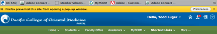
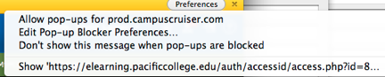

Cannot access MyPCOM or My Classes
The pop-up
blocker software within Firefox may prevent some users from accessing the
MyPCOM and Pacific College eLearning sites.
Follow the steps below to allow pop-ups from the Pacific College eLearning
site, so that you can access the page as intended.

1. Click the "Preferences" button in the yellow banner
The yellow banner will say "Firefox prevented this site from opening a pop-up window." See image to the right for an example. A drop down menu will appear when you click on the Preferences button in the yellow banner.

2. Select "Allow pop-ups for prod.campuscruiser.com"
Selecting "Allow pop-ups for prod.campuscruiser.com" will authroize Firefox to allow pop-ups only from the MyPCOM site to open the Pacific College eLearning site. Pop-ups, such as advertisements and other web-junk will still be blocked from other websites.
3. - OR - allow popups from the menu options
On a Mac - change the Firefox preferences to allow pop-ups
from the MyPCOM site:
a. Choose Preferences from the Firefox menu, next to the Apple menu icon at the
top of the screen.
b. In the Preferences window, select the Content tab.
c. Click the Exceptions button.
d. Type "prod.campuscruiser.com" in the Address of website field
(minus the quotation marks). Click Allow. Close the Preferences window. Try to
open/access the MyPCOM site again.
4. iOS device (iPhone or ipad)
If you are having trouble accessing your classes on an iOS device, follow these directions to disable the popup blocker in Safari: http://browsers.about.com/od/safar1/ss/How-To-Enable-The-Pop-Up-Blocker-In-Safari_8.htm
5. Android phone or tablet
If you are having trouble accessing your classes on an Android device, follow these directions to disable the popup blocker in the default browser: http://www.wikihow.com/Get-the-Android-Browser-to-Block-Popups. Note: Be sure to UNCHECK the box that says "Block Popups."
References